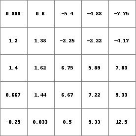
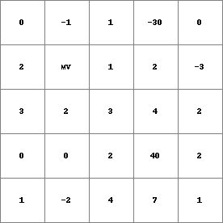
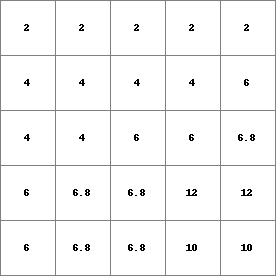

windowaverage¶
windowaverage
Average of cell values within a specified square neighbourhood
Result = windowaverage(expression, windowlength)
- expression
- spatial scalar
- windowlength
- spatial, non spatial scalar
- Result
- spatial scalar
Options¶
--unittrue or --unitcell
- --unittrue
- windowlength is measured in true length (default)
- --unitcell
- windowlength is measured in number cell lengths
Operation¶
For each cell its windowaverage is computed as follows. A square window with the cell in its centre is defined by windowlength. The windowlength is the length of the window in horizontal and vertical directions. For each cell i which is entirely or partly in the window the fraction of the cell in the window is determined. This is the area of the part of the cell in the window divided by the total area of a cell. Call this fraction(i); let expression(i) be the expression value of cell i. Now, the windowaverage(c) of the centercell is computed by taking a fraction weighted average of the values on expression:
where n is the number of cells which is entirely or partly in the window. For each cell c its windowaverage is computed and assigned to the corresponding cell on Result.
Notes¶
The cell value on windowlength should be greater than 0, else a missing value is assigned to the corresponding cell on Result.
A cell on windowlength with a missing value results in a missing value on Result at the corresponding cell. However, if a missing value on windowlength occurs in a cell which is not the centre cell of the window the expression value in that cell is included in the summation of the cell values in the window.
Group¶
This operation belongs to the group of Neigbourhood operators; window operators
Examples¶
- • pcrcalcbindingResult1 = Result1.map;Expr = Expr.map;initialreport Result1 = windowaverage( Expr, 6);• pythonExpr = readmap(“Expr.map”)Result1 = windowaverage( Expr, 6)
Result1.map Expr.map   - • pcrcalcbindingResult2 = Result2.map;Expr = Expr.map;WinLen2 = WinLen2.map;initialreport Result2 = windowaverage( Expr, WinLen2);• pythonExpr = readmap(“Expr.map”)WinLen2 = readmap(“WinLen2.map”)Result2 = windowaverage( Expr, WinLen2)
Result2.map Expr.map WinLen2.map 
